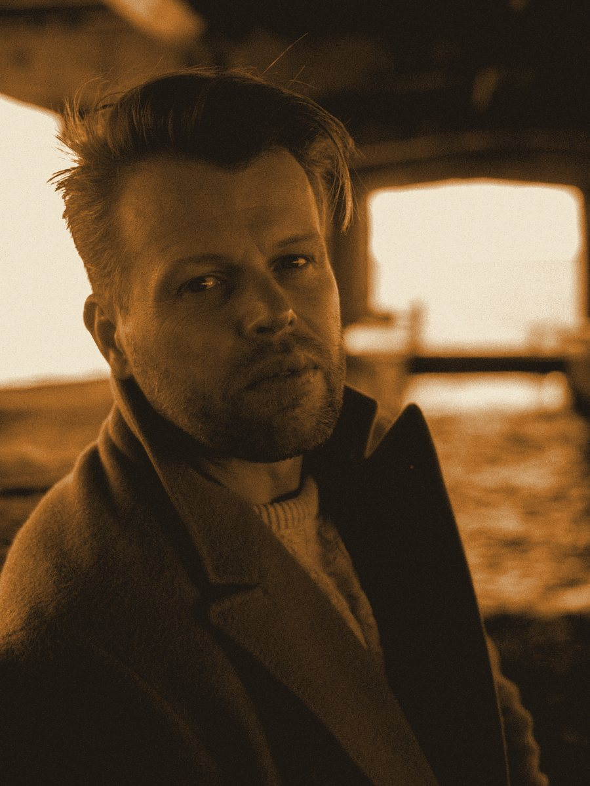
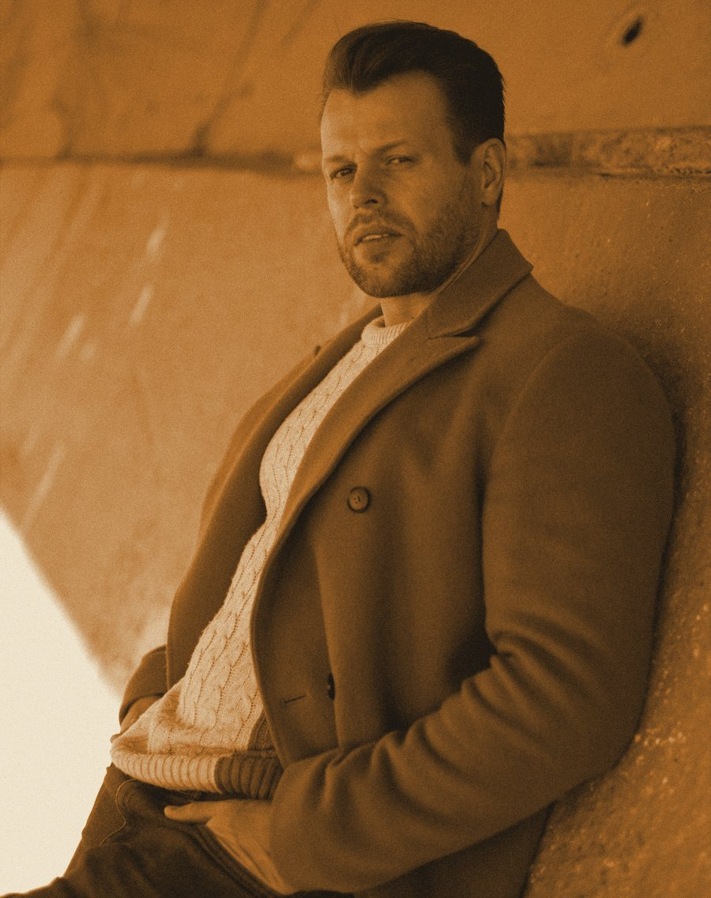
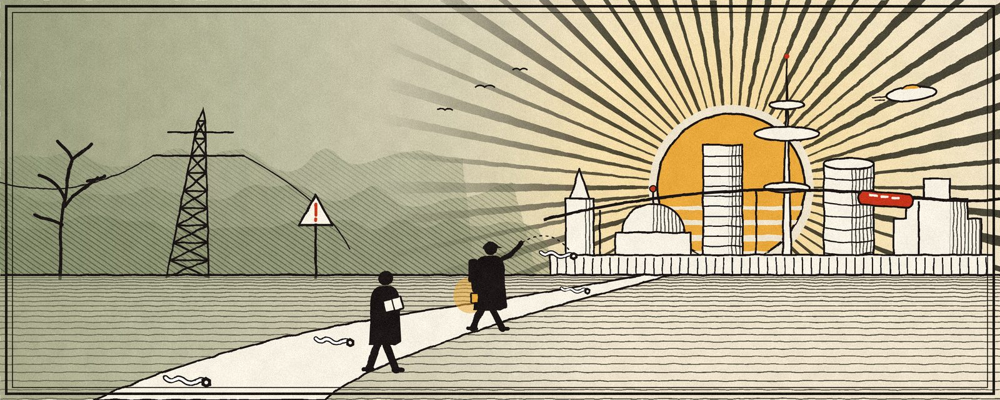
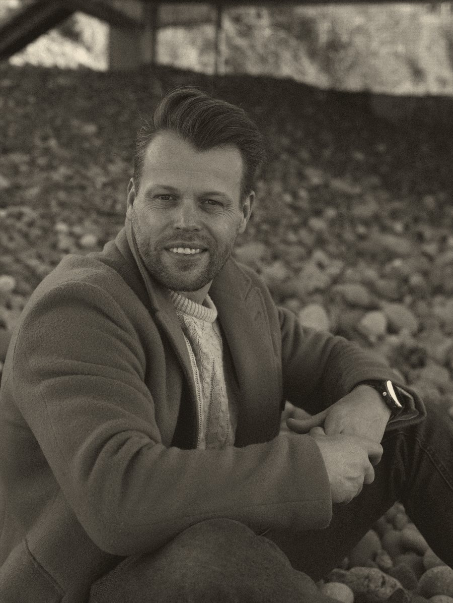

Живые задачи, а не слайды
Глава рукописи, письмо в банк, заявка клиента. Георгий берёт настоящие задачи и показывает, что с ними делает помощник.

Три вечера с писателем Георгием Чистовым. На живых задачах покажем помощников, которые забирают рутину — вокруг книги, в личных делах и в работе, — и посчитаем, сколько времени и денег они возвращают.




Через Зону нейросетей — в Полдень. С проводником.Илл. 1 · проводник проверяет тропу, прежде чем по ней пойдёте вы
Три вечера подряд, по одной большой теме. Не «в теории так можно», а готовые результаты на экране: что сделал помощник, сколько времени это заняло и сколько денег сберегло.
Глава рукописи, письмо в банк, заявка клиента. Георгий берёт настоящие задачи и показывает, что с ними делает помощник.
Пишете свою задачу в чат — лучшие разбираем при всех. Писательские, рабочие, житейские. Стыдных вопросов нет.
Уйдёте с пониманием, какой помощник нужен именно вам и что изменится, когда он появится: сколько часов и денег он вернёт.
Было интересно и полезно, но практики мало— поэтому в этот раз три вечера практики.
Что нейросеть делает с рукописью, не трогая ни одного вашего слова.
Для тех, кто пишет: книги, статьи, посты, сценарии. Текст остаётся вашим.
Личный помощник, который разбирается в бумагах и ничего не забывает.
Для всех, в том числе для тех, кто «не технический человек». Это не сложнее, чем когда‑то освоить смартфон.
Продвижение, клиенты и новые источники дохода — без армии подрядчиков.
Для писателей, экспертов и предпринимателей. 14 помощников Георгия работают у клиентов — за это ему платят уже год.
Можно прийти на любой вечер — каждый посвящён своей теме. Но путь от книги к доходу лучше пройти целиком: одна регистрация открывает все три.
Георгий и команда прошли эту тропу сами. На практикуме покажем, где нейросеть ошибается, где «забывает» и почему у новичков «выходит не то», — и что меняется, когда рядом проводник. Сложное берём на себя мы.
Помощник помнит вашу книгу, ваши дела и вашу манеру — и делает работу, на которую у вас уходили вечера. На практикуме увидите, как такие помощники работают у писателей, экспертов, предпринимателей и в личной жизни, и поймёте, какой нужен вам и что нужно, чтобы он у вас появился.
 N°02
N°02 N°03
N°03 N°04
N°04 N°05
N°05 N°01
N°01Это не сложнее, чем когда‑то освоить смартфон. А всё сложное мы берём на себя.
Текст книг по‑прежнему пишет автор: нейросеть не написала в них ни одной фразы.
«Сценарная комната — это просто супер! Это скачок на порядок выше всех вещей, которые сейчас есть!»
«Это невероятно! Я делала 2 сайта. Я поражена результатом. Шрифты, структура, цветовая палитра, удобство.»
«Здорово! Хочу такого редактора!»
«Интересно именно мнение практика, а не постоянных рекламных кампаний.»
«Исчерпывающая информация, спасибо.»
«Вообще гениально! Хоть один человек правду сказал.»
«Спасибо за эфир: практично! И спасибо за возможность задать вопросы в прямом эфире.»
«Очень крутой вебинар. У нас ещё есть надежда, спасибо, Георгий! Нас спасёт наш творческий дух!»
«Встреча ценнейшая. Есть желание!»
Это не консультация в чистом виде. За одну встречу вы поймёте, где в вашей книге, работе или делах можно сэкономить уйму времени и денег — и с чего начать. Разбор — первый шаг в обучение.


«Благодаря нейросетям я сейчас в США. В прямом смысле. Первую книгу издавал три месяца, с корректором за 45 тысяч. Вторую выпустил за месяц — вместе с переводом и трейлером. И нейросеть не написала в моих книгах ни одной фразы».

Сергей Гончаренко — сооснователь и директор GetPublishED, ведущий практикума вместе с Георгием.
Да. Все три вечера бесплатны, одна регистрация — на все три. Платный только личный разбор с Георгием, по желанию.
13, 14 и 15 октября в 19:00 по Москве, прямой эфир в GetCourse. Ссылка придёт на почту и в чат за час до начала каждого вечера. Смотреть можно с компьютера или с телефона.
Приходите на второй и третий: каждый вечер — отдельная тема. Вторник — книга, среда — жизнь, четверг — доход.
Поймёте. Георгий тоже не айтишник — он писатель. Это не сложнее, чем когда‑то освоить смартфон, а всё сложное берём на себя мы.
Да. Второй вечер — о личных делах: суд, банк, виза, врач, напоминания. Третий — о работе и доходе для экспертов и предпринимателей.
Нет. Текст остаётся вашим. Помощник берёт на себя всё вокруг текста: замечания, перевод, иллюстрации, продвижение.
Это личная встреча с Георгием по вашему проекту. Не консультация в чистом виде: вы уходите с картой, тремя первыми делами для помощника и маршрутом на восемь недель — и понимаете, где сэкономить уйму времени и денег. 4 900 ₽ засчитываются в стоимость обучения.
Три вечера, чтобы увидеть, сколько времени и денег возвращают помощники, — и понять, какой нужен вам.